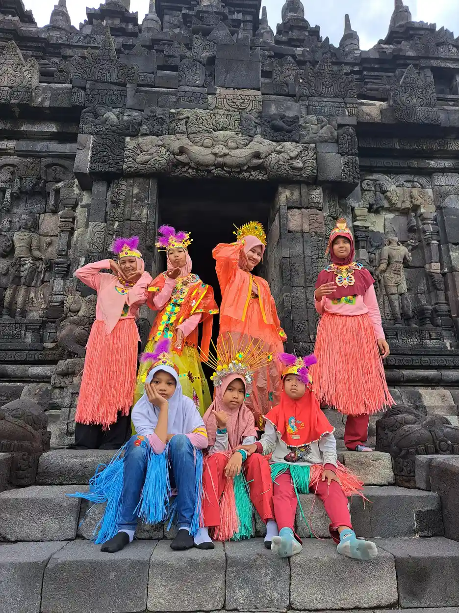
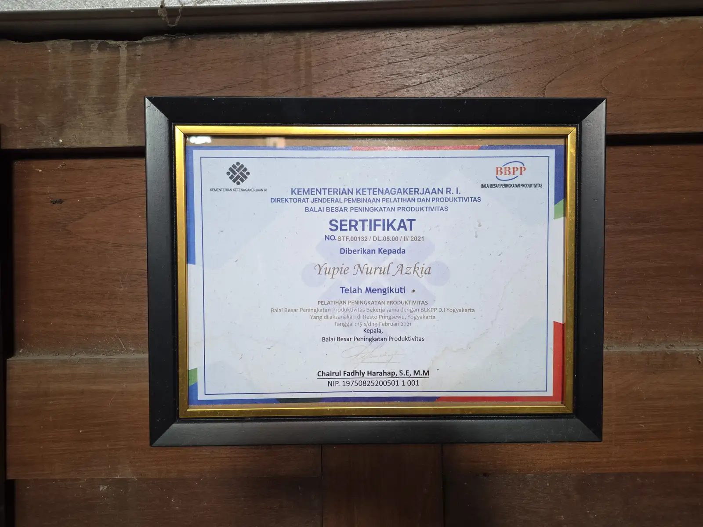

Cara Membuat Jadwal Visual untuk Anak Autis perlu dibahas dengan bahasa yang tidak menghakimi dan berdasarkan kebutuhan nyata anak. Jawaban yang aman tidak hanya melihat satu perilaku, tetapi juga konteks, komunikasi, kesehatan, kemampuan, dan hambatan yang dihadapi anak setiap hari. Artikel ini memberi kerangka praktis untuk orang tua, guru, dan pendamping.
Setiap anak berkembang dengan jalur yang berbeda. Informasi di halaman ini bersifat edukasi, bukan diagnosis atau pengganti konsultasi. Bila ada perubahan yang mengkhawatirkan, gangguan fungsi, atau risiko keselamatan, bawa catatan pengamatan kepada tenaga profesional. Untuk memahami dukungan yang lebih luas, baca juga panduan pendidikan inklusi dan asesmen anak berkebutuhan khusus.
Daftar Isi
Apa yang Dimaksud Cara Membuat Jadwal Visual Untuk Anak Autis?
Jadwal visual adalah representasi gambar, tulisan, benda, atau kombinasi yang menunjukkan urutan kegiatan. Bagi sebagian anak autis, jadwal membuat waktu yang abstrak menjadi lebih dapat diprediksi. Jadwal bukan dekorasi dan bukan alat untuk memaksa. Ia adalah dukungan komunikasi yang membantu anak memahami apa yang terjadi, apa yang selesai, dan apa yang berikutnya. Istilah ini sebaiknya dipahami sebagai titik awal untuk bertanya, bukan label untuk menyimpulkan kemampuan anak. Dalam praktiknya, dukungan perlu disesuaikan dengan usia, cara komunikasi, kesehatan, lingkungan, dan tujuan anak. Libatkan anak sejauh ia mampu, tanyakan pilihannya, lalu evaluasi apakah strategi itu benar-benar membuat aktivitas lebih aman, mudah dipahami, dan bermakna.
Jadwal visual adalah representasi gambar, tulisan, benda, atau kombinasi yang menunjukkan urutan kegiatan. Bagi sebagian anak autis, jadwal membuat waktu yang abstrak menjadi lebih dapat diprediksi. Jadwal bukan dekorasi dan bukan alat untuk memaksa. Ia adalah dukungan komunikasi yang membantu anak memahami apa yang terjadi, apa yang selesai, dan apa yang berikutnya. Konteks keluarga dan lingkungan juga penting karena perilaku yang sama dapat memiliki arti berbeda pada situasi yang berbeda. Dalam praktiknya, dukungan perlu disesuaikan dengan usia, cara komunikasi, kesehatan, lingkungan, dan tujuan anak. Libatkan anak sejauh ia mampu, tanyakan pilihannya, lalu evaluasi apakah strategi itu benar-benar membuat aktivitas lebih aman, mudah dipahami, dan bermakna.
Tanda dan Hal yang Perlu Diamati
Perhatikan bagian hari yang paling sering memicu bingung atau menolak, misalnya berangkat, makan, mandi, terapi, atau pulang sekolah. Pilih satu rutinitas dulu. Tanyakan apakah anak lebih mudah memahami foto, gambar simbol, kata tertulis, atau benda nyata. Bentuk visual harus mengikuti cara anak memproses informasi. Gunakan contoh yang dapat dilihat dan didengar, bukan penilaian seperti malas, nakal, atau tidak mau. Dalam praktiknya, dukungan perlu disesuaikan dengan usia, cara komunikasi, kesehatan, lingkungan, dan tujuan anak. Libatkan anak sejauh ia mampu, tanyakan pilihannya, lalu evaluasi apakah strategi itu benar-benar membuat aktivitas lebih aman, mudah dipahami, dan bermakna.
Perhatikan bagian hari yang paling sering memicu bingung atau menolak, misalnya berangkat, makan, mandi, terapi, atau pulang sekolah. Pilih satu rutinitas dulu. Tanyakan apakah anak lebih mudah memahami foto, gambar simbol, kata tertulis, atau benda nyata. Bentuk visual harus mengikuti cara anak memproses informasi. Catatan sederhana berisi tanggal, situasi, pemicu, respons anak, dan hasil setelah dukungan diberikan akan membantu melihat pola. Dalam praktiknya, dukungan perlu disesuaikan dengan usia, cara komunikasi, kesehatan, lingkungan, dan tujuan anak. Libatkan anak sejauh ia mampu, tanyakan pilihannya, lalu evaluasi apakah strategi itu benar-benar membuat aktivitas lebih aman, mudah dipahami, dan bermakna.
Penyebab dan Faktor yang Memengaruhi
Transisi sulit dapat dipengaruhi perubahan mendadak, bahasa yang terlalu panjang, rasa cemas, pengalaman tidak menyenangkan, atau belum ada pemahaman tentang durasi. Jadwal visual membantu, tetapi tidak menghapus semua kebutuhan. Anak tetap perlu diberi pilihan, waktu tunggu, dan penjelasan yang sesuai. Satu perilaku jarang memiliki satu penyebab tunggal. Dalam praktiknya, dukungan perlu disesuaikan dengan usia, cara komunikasi, kesehatan, lingkungan, dan tujuan anak. Libatkan anak sejauh ia mampu, tanyakan pilihannya, lalu evaluasi apakah strategi itu benar-benar membuat aktivitas lebih aman, mudah dipahami, dan bermakna.
Transisi sulit dapat dipengaruhi perubahan mendadak, bahasa yang terlalu panjang, rasa cemas, pengalaman tidak menyenangkan, atau belum ada pemahaman tentang durasi. Jadwal visual membantu, tetapi tidak menghapus semua kebutuhan. Anak tetap perlu diberi pilihan, waktu tunggu, dan penjelasan yang sesuai. Jangan menyalahkan anak atau orang tua sebelum kebutuhan komunikasi, sensorik, kesehatan, dan lingkungan diperiksa. Dalam praktiknya, dukungan perlu disesuaikan dengan usia, cara komunikasi, kesehatan, lingkungan, dan tujuan anak. Libatkan anak sejauh ia mampu, tanyakan pilihannya, lalu evaluasi apakah strategi itu benar-benar membuat aktivitas lebih aman, mudah dipahami, dan bermakna.
Langkah Asesmen yang Tepat
Buat daftar tiga sampai lima kegiatan yang benar-benar terjadi. Tempel pada ketinggian yang mudah dilihat. Ajarkan rutinitas mengambil simbol kegiatan saat mulai, memindahkannya ke kolom selesai, lalu melihat kegiatan berikutnya. Awalnya orang dewasa memberi contoh dan bantuan, lalu bantuan dikurangi perlahan. Bawa contoh konkret, rekaman pola, riwayat kesehatan, dan informasi dari sekolah bila tersedia. Dalam praktiknya, dukungan perlu disesuaikan dengan usia, cara komunikasi, kesehatan, lingkungan, dan tujuan anak. Libatkan anak sejauh ia mampu, tanyakan pilihannya, lalu evaluasi apakah strategi itu benar-benar membuat aktivitas lebih aman, mudah dipahami, dan bermakna.
Buat daftar tiga sampai lima kegiatan yang benar-benar terjadi. Tempel pada ketinggian yang mudah dilihat. Ajarkan rutinitas mengambil simbol kegiatan saat mulai, memindahkannya ke kolom selesai, lalu melihat kegiatan berikutnya. Awalnya orang dewasa memberi contoh dan bantuan, lalu bantuan dikurangi perlahan. Tujuan asesmen bukan sekadar mendapatkan nama kondisi, tetapi menentukan dukungan yang dapat diuji dan dievaluasi. Dalam praktiknya, dukungan perlu disesuaikan dengan usia, cara komunikasi, kesehatan, lingkungan, dan tujuan anak. Libatkan anak sejauh ia mampu, tanyakan pilihannya, lalu evaluasi apakah strategi itu benar-benar membuat aktivitas lebih aman, mudah dipahami, dan bermakna.
Dukungan Praktis di Rumah
Gunakan foto benda nyata untuk anak yang masih belajar simbol, misalnya foto sikat gigi, tas, atau piring. Untuk jadwal harian, masukkan waktu istirahat dan pilihan. Jika rencana berubah, tampilkan kartu perubahan dan jelaskan dengan kalimat singkat. Jangan menghapus aktivitas favorit sebagai hukuman. Pilih satu atau dua strategi terlebih dahulu agar keluarga dapat melihat dampaknya dengan jelas. Dalam praktiknya, dukungan perlu disesuaikan dengan usia, cara komunikasi, kesehatan, lingkungan, dan tujuan anak. Libatkan anak sejauh ia mampu, tanyakan pilihannya, lalu evaluasi apakah strategi itu benar-benar membuat aktivitas lebih aman, mudah dipahami, dan bermakna.
Gunakan foto benda nyata untuk anak yang masih belajar simbol, misalnya foto sikat gigi, tas, atau piring. Untuk jadwal harian, masukkan waktu istirahat dan pilihan. Jika rencana berubah, tampilkan kartu perubahan dan jelaskan dengan kalimat singkat. Jangan menghapus aktivitas favorit sebagai hukuman. Konsistensi lebih bermanfaat daripada aturan yang banyak tetapi berubah-ubah. Dalam praktiknya, dukungan perlu disesuaikan dengan usia, cara komunikasi, kesehatan, lingkungan, dan tujuan anak. Libatkan anak sejauh ia mampu, tanyakan pilihannya, lalu evaluasi apakah strategi itu benar-benar membuat aktivitas lebih aman, mudah dipahami, dan bermakna.
Kolaborasi dengan Sekolah

Guru dapat membuat jadwal kelas, jadwal meja, atau kartu transisi individual. Tandai kegiatan yang selesai dan beri peringatan sebelum pergantian. Jadwal perlu fleksibel, karena tujuan akhirnya bukan anak patuh pada papan, melainkan mampu memahami perubahan dan beralih dengan dukungan yang makin kecil. Tulis strategi yang berhasil dalam bahasa sederhana agar dapat dipakai oleh semua pendamping. Dalam praktiknya, dukungan perlu disesuaikan dengan usia, cara komunikasi, kesehatan, lingkungan, dan tujuan anak. Libatkan anak sejauh ia mampu, tanyakan pilihannya, lalu evaluasi apakah strategi itu benar-benar membuat aktivitas lebih aman, mudah dipahami, dan bermakna.
Guru dapat membuat jadwal kelas, jadwal meja, atau kartu transisi individual. Tandai kegiatan yang selesai dan beri peringatan sebelum pergantian. Jadwal perlu fleksibel, karena tujuan akhirnya bukan anak patuh pada papan, melainkan mampu memahami perubahan dan beralih dengan dukungan yang makin kecil. Akomodasi bukan perlakuan istimewa, melainkan cara membuka akses belajar dan partisipasi. Dalam praktiknya, dukungan perlu disesuaikan dengan usia, cara komunikasi, kesehatan, lingkungan, dan tujuan anak. Libatkan anak sejauh ia mampu, tanyakan pilihannya, lalu evaluasi apakah strategi itu benar-benar membuat aktivitas lebih aman, mudah dipahami, dan bermakna.
Kapan Mencari Bantuan

Jadwal perlu dievaluasi bila anak semakin cemas, merobek semua kartu, hanya terpaku pada urutan, atau tidak memahami simbol. Mungkin jumlah kegiatan terlalu banyak, simbol terlalu abstrak, atau ada masalah sensorik dan komunikasi lain yang belum ditangani. Jangan menunggu bila fungsi anak menurun cepat atau keselamatan menjadi persoalan. Dalam praktiknya, dukungan perlu disesuaikan dengan usia, cara komunikasi, kesehatan, lingkungan, dan tujuan anak. Libatkan anak sejauh ia mampu, tanyakan pilihannya, lalu evaluasi apakah strategi itu benar-benar membuat aktivitas lebih aman, mudah dipahami, dan bermakna.
Jadwal perlu dievaluasi bila anak semakin cemas, merobek semua kartu, hanya terpaku pada urutan, atau tidak memahami simbol. Mungkin jumlah kegiatan terlalu banyak, simbol terlalu abstrak, atau ada masalah sensorik dan komunikasi lain yang belum ditangani. Bantuan lebih awal dapat mencegah masalah berkembang menjadi konflik yang lebih berat. Dalam praktiknya, dukungan perlu disesuaikan dengan usia, cara komunikasi, kesehatan, lingkungan, dan tujuan anak. Libatkan anak sejauh ia mampu, tanyakan pilihannya, lalu evaluasi apakah strategi itu benar-benar membuat aktivitas lebih aman, mudah dipahami, dan bermakna.
Membuat Rencana Dukungan
Visual supports dari National Autistic Society menjelaskan bahwa dukungan visual dapat membantu komunikasi, pemahaman, dan kemandirian, tetapi harus individual. Libatkan anak dalam memilih simbol dan minta keluarga serta sekolah memakai format yang serupa. Keberhasilan diukur dari pemahaman dan kemandirian, bukan dari tampilan jadwal yang rapi. Rencana yang baik memiliki tujuan, langkah, orang yang bertanggung jawab, dan tanggal evaluasi. Dalam praktiknya, dukungan perlu disesuaikan dengan usia, cara komunikasi, kesehatan, lingkungan, dan tujuan anak. Libatkan anak sejauh ia mampu, tanyakan pilihannya, lalu evaluasi apakah strategi itu benar-benar membuat aktivitas lebih aman, mudah dipahami, dan bermakna.
Visual supports dari National Autistic Society menjelaskan bahwa dukungan visual dapat membantu komunikasi, pemahaman, dan kemandirian, tetapi harus individual. Libatkan anak dalam memilih simbol dan minta keluarga serta sekolah memakai format yang serupa. Keberhasilan diukur dari pemahaman dan kemandirian, bukan dari tampilan jadwal yang rapi. Tanyakan kepada anak apa yang membuatnya lebih aman dan lebih mudah berpartisipasi. Dalam praktiknya, dukungan perlu disesuaikan dengan usia, cara komunikasi, kesehatan, lingkungan, dan tujuan anak. Libatkan anak sejauh ia mampu, tanyakan pilihannya, lalu evaluasi apakah strategi itu benar-benar membuat aktivitas lebih aman, mudah dipahami, dan bermakna.
Checklist singkat untuk keluarga
- Tulis perilaku atau kebutuhan yang paling mengganggu fungsi.
- Catat kapan, di mana, dan setelah pemicu apa hal itu muncul.
- Pilih satu strategi dukungan yang aman dan dapat diukur.
- Koordinasikan dengan sekolah atau terapis.
- Tinjau hasilnya dan ubah rencana bila tidak membantu.
FAQ Cara Membuat Jadwal Visual Untuk Anak Autis
Apakah semua anak autis membutuhkan jadwal visual?
Tidak. Jadwal visual bermanfaat bila sesuai cara anak memahami informasi. Ada anak yang membutuhkan foto, ada yang cukup dengan tulisan, dan ada yang lebih terbantu benda nyata atau pengingat suara.
Berapa banyak kegiatan yang dimasukkan?
Mulai dari tiga sampai lima kegiatan dalam satu rutinitas. Setelah anak memahami cara menggunakannya, jadwal dapat diperluas. Terlalu banyak informasi dapat membuat anak bingung.
Bagaimana mengenalkan perubahan jadwal?
Gunakan simbol perubahan, beri peringatan, jelaskan aktivitas pengganti, dan tawarkan pilihan kecil. Latihan perubahan ringan saat anak tenang membantu membangun fleksibilitas.
Bolehkah jadwal memakai ponsel?
Boleh jika anak nyaman dan perangkat tidak menambah distraksi. Untuk anak lain, papan fisik lebih mudah dilihat. Pilih media berdasarkan fungsi, bukan karena lebih canggih.
Apa tanda jadwalnya berhasil?
Anak lebih cepat memahami urutan, dapat memindahkan simbol, meminta bantuan atau jeda, dan menyelesaikan transisi dengan lebih sedikit bantuan. Ukur perubahan itu selama beberapa minggu.
Kesimpulan: Visual supports dari National Autistic Society menjelaskan bahwa dukungan visual dapat membantu komunikasi, pemahaman, dan kemandirian, tetapi harus individual. Libatkan anak dalam memilih simbol dan minta keluarga serta sekolah memakai format yang serupa. Keberhasilan diukur dari pemahaman dan kemandirian, bukan dari tampilan jadwal yang rapi. Keluarga tidak harus mencari solusi sendirian. Mulai dari observasi yang jujur, dukungan yang aman, dan rujukan yang tepat. Jika ingin mendiskusikan program pendidikan atau terapi, kunjungi halaman kontak YUKA Indonesia.
Sumber rujukan: sumber resmi 1 dan sumber resmi 2. Tautan dibuka sebagai bahan edukasi dan bukan pengganti konsultasi profesional.